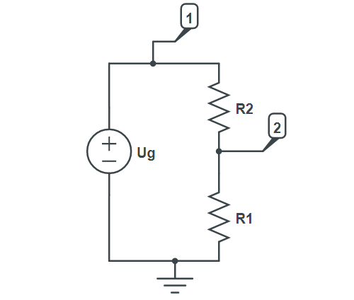

Building a circuit
In this section it will be demonstrated how to build a simple circuit and parse the results.
Circuit description
Voltage divider (also known as a potential divider) is a passive linear circuit that produces an output voltage that is a fraction of its input voltage. Voltage division is the result of distributing the input voltage among the components of the divider. A simple example of a voltage divider is two resistors connected in series, with the input voltage applied across the resistor pair and the output voltage emerging from the connection between them.

Modeling the circuit
First let's create a new Julia file and include the Symbolics library as well as the CircuitS file. You can also simply open a julia interpreter and follow along the way.
using Symbolics
include("CircuitS.jl")Make sure that the CircuitS.jl file is in the same directory, or alternatively you can use an absolute path of the CircuitS.jl file.
Now let's create the circuit by adding elements as shown in the picture.
circuit = create_circuit()
add_element([Resistor, "R1", 2, 0], circuit)
add_element([Resistor, "R2", 1, 2], circuit)
add_element([Voltage, "Ug", 1, 0], circuit)If we wanted to have the same symbols for both resistors, we can't just put R as id in both elements because those have to be unique. Instead, we have to pass the replacement symbols when we initialize the circuit equations:
@variables R1 R2 R
init_circuit(circuit, Dict([R1=>R, R2=>R]) )Now all that is left is to initialize the circuit and run the simulation:
init_circuit(circuit)
result = simulate(circuit)
println(result)Which should output the following response:
Dict{Any, Any} with 3 entries:
"V2" => (-R1*Ug) / (-R1 - R2)
"I_Ug" => Ug / (-R1 - R2)
"V1" => UgParsing the results
In previous steps we stored our simulation results in a variable called result, which is a dictionary key=>value where key is a node potential or some branch current.
If we want to get a list of everything that has been calculated we can simply collect all the keys in a vector or use get_variables function:
vars = collect(keys(result))
println(vars)
vars = get_variables(circuit)
println(vars)3-element Vector{Num}:
V1
V2
I_UgFor get_variables function we don't need to simulate the circuit, only initialize it.
We can also use these calculated equations for further processing. Let's say we want to find the voltage across R1. We can do this by subtracting node potentials of V1 and V2 or vice versa.
U1 = result["V1"] - result["V2"]
println(U1)Ug + (R1*Ug) / (-R1 - R2)Printing the results
Unfortunately, the console window can't print latex equations, but we can generate latex code and display it in an environment that does support printing.
To print latex code, we need another library latexify.jl (docs):
julia> import Pkg
julia> Pkg.add("Latexify")Then simply call the function latexify(eq), to obtain latex equivalent of the equation eq:
using Latexify
print(latexify(result["V2"]))\begin{equation}
\frac{ - R1 Ug}{ - R1 - R2}
\end{equation}